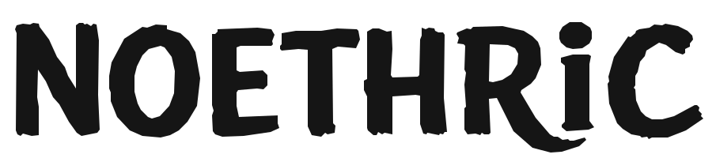

PROJECT / 001
PLAY / EXPLORE / REPEAT
ROBLOX · IN DEVELOPMENTPLAYABLE
PLAYABLE
EXPERIMENTS
Social experiences, unexpected mechanics, and a little creative chaos.
IDEAS IN MOTION / 001
We're building experiences worth getting lost in. First the games. Then the worlds beyond them.
EXPLORE THE STUDIO ↗THE STUDIO / OUR MINDSET
We’re an independent game studio starting with Roblox experiences and aiming for original 3D worlds. We experiment, build, test, and keep moving.
SMALL TEAM. BIG CANVAS. ZERO PRETENSE.Social experiences, unexpected mechanics, and a little creative chaos.
Long-term plans for ambitious worlds made to reward curiosity.
Our experimental game engine project. We're exploring an adaptable editor, rendering and shader improvements, and accessible tools for building bigger worlds.
FOLLOW DEVELOPMENT ↗Acelden works in partnership with Noethric, a product studio focused on building technology that solves real problems.
DISCOVER NOETHRIC ↗
New games. New tools. New worlds.
Follow what we're building.